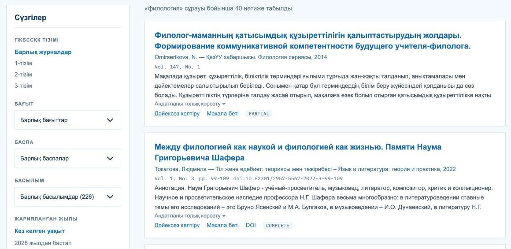

Мақалаларды табыңыз, журналдар мен автор деректерін тексеріңіз. Находите статьи, проверяйте журналы и данные об авторах. Find articles and verify journal and author information.
ORCID iD бойынша да іздеуге боладыМожно искать и по ORCID iDYou can also search by ORCID iD · Журналдар каталогыКаталог журналовJournal catalogue
ҒЖБССҚК тізіміндегі көптеген отандық журнал Scopus пен Web of Science базаларына кірмейді. DerekSci олардағы жарияланымдарды табуға, тексеруге және дұрыс дәйексөз келтіруге көмектеседі. Многие казахстанские журналы из перечня КОКСНВО не представлены в Scopus и Web of Science. DerekSci помогает находить, проверять и корректно цитировать опубликованные в них работы. Many Kazakhstan journals on the CQAFSHE list are not indexed by Scopus or Web of Science. DerekSci helps you find, verify, and correctly cite the works they publish.
Қазақстандық журналдардағы жарияланымдарды атауы, авторы, кілт сөзі немесе журналы бойынша табыңыз.Ищите публикации казахстанских журналов по названию, автору, ключевым словам или журналу.Find publications in Kazakhstan journals by title, author, keyword, or journal.
ORCID-пен байланыстырылған профильден автордың еңбектері мен дәйексөз санын көріңіз.Смотрите связанные с ORCID публикации и число цитирований по данным Scopus и Crossref.View ORCID-linked publications and citation counts from Scopus and Crossref.
Әр журналдың ISSN нөмірін, баспасын және ҒЖБССҚК тізіміндегі санатын тексеріңіз.Проверяйте ISSN, издателя и категорию в перечне КОКСНВО.Check each journal's ISSN, publisher, and CQAFSHE list category.

Сүзгілермен ізделген мақала бірден дәйексөзге дайын түрде шығады.С фильтрами нужная статья сразу выходит готовой для цитирования.Use filters to find an article and get a citation-ready record.
1, 2 немесе 3-тізімге жататын журналдарды бөлек көріңіз.Отдельно смотрите журналы из списка 1, 2 или 3.View journals from lists 1, 2, or 3 separately.
APA, ГОСТ Р 7.0.5 және BibTeX форматында бір басумен.В формате APA, ГОСТ Р 7.0.5 и BibTeX в один клик.APA, GOST R 7.0.5, and BibTeX in one click.
Әр жазба толық немесе ішінара деп белгіленеді.Каждая запись помечена как полная или частичная.Every record is marked as complete or partial.
Тақырыбы, авторы немесе кілт сөзі бойынша мақала табасыз.Находите статью по теме, автору или ключевому слову.Find an article by topic, author, or keyword.
Журналдың ISSN-ін және ҒЖБССҚК тізіміндегі орнын қарайсыз.Смотрите ISSN журнала и его место в перечне КОКСНВО.Check the journal's ISSN and place on the CQAFSHE list.
Профиліңізді ORCID iD-ге қосасыз.Привязываете профиль к ORCID iD.Connect your profile to your ORCID iD.
Дұрыс сілтеме беріп, дәйексөзіңізді көрсетесіз.Указываете корректную ссылку и видите цитирования.Create an accurate reference and view citations.
Деректер тікелей DerekSci каталогынан, 2026 жылғы қарашада алынды.Данные взяты напрямую из каталога DerekSci, ноябрь 2026.Data taken directly from the DerekSci catalogue in November 2026.
Қазақстандық ғылыми еңбектерді іздеп, авторлар мен журналдар туралы нақты деректі бір жерден табыңыз. Найдите казахстанскую научную публикацию и проверьте сведения об авторе или журнале. Find a research publication from Kazakhstan and verify its author or journal information.
Іздеуді бастауНачать поискStart searching